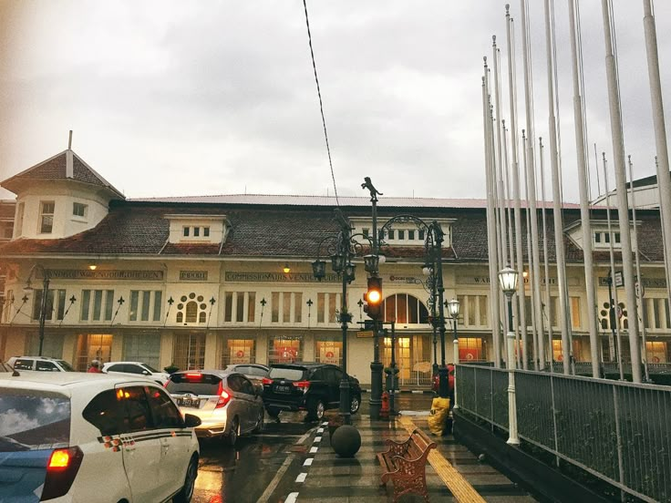
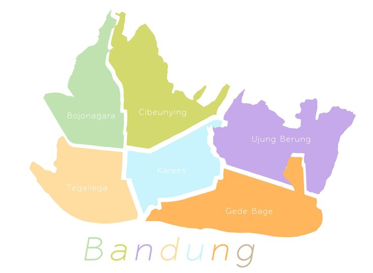
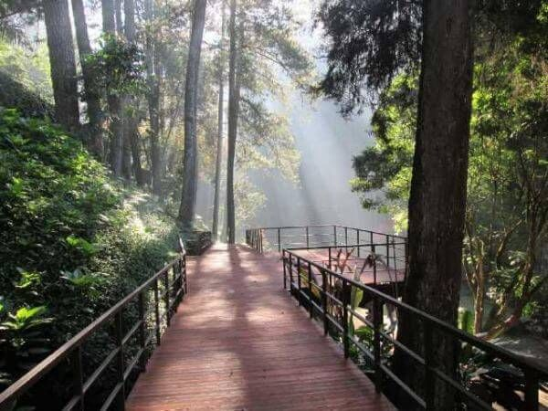
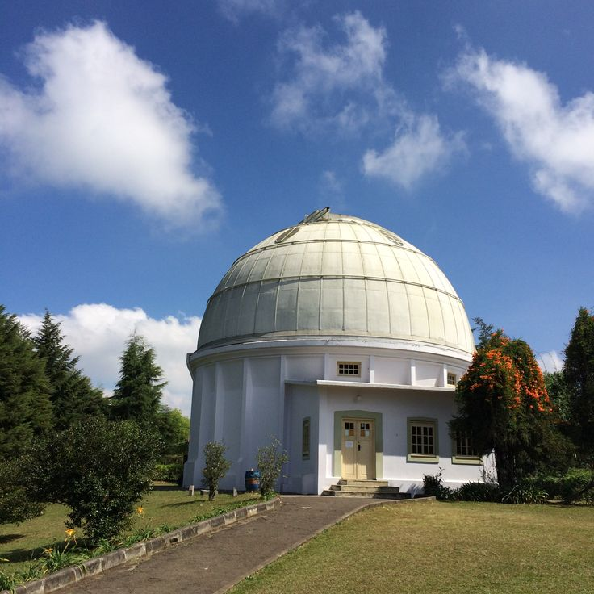

Sejarah

Bandung memiliki sejarah yang sangat kaya dan kompleks, mulai dari
zaman kolonial Belanda ketika kota ini dikembangkan sebagai kota wisata
dan pendidikan yang populer di kalangan elite Belanda, hingga menjadi
pusat perjuangan kemerdekaan Indonesia dengan peristiwa penting seperti
Konferensi Asia-Afrika pada tahun 1955 yang memperkuat posisi Indonesia
di kancah internasional, dan kota ini juga terkenal dengan arsitektur
kolonial yang masih terawat hingga saat ini, menampilkan keindahan dan
keunikan gaya bangunan yang menjadi warisan budaya yang sangat berharga.
Bandung juga memiliki peran penting dalam perjuangan kemerdekaan Indonesia,
terutama dengan peristiwa Bandung Lautan Api pada tahun 1946,
ketika kota Bandung dibumihanguskan oleh para pejuang kemerdekaan
untuk mencegah pasukan Sekutu menggunakannya sebagai basis militer,
menunjukkan keberanian dan semangat juang rakyat Bandung dalam
memperjuangkan kemerdekaan bangsa.
Geografis

Bandung terletak di dataran tinggi yang dikelilingi oleh pegunungan,
dengan ketinggian sekitar 768 meter di atas permukaan laut,
sehingga memberikan iklim yang sejuk dan nyaman. Kota ini juga
dikelilingi oleh beberapa gunung api aktif seperti Gunung
Tangkuban Perahu dan Gunung Burangrang, yang memberikan keindahan
alam dan potensi wisata yang luar biasa. Dengan geografisnya yang
unik, Bandung menjadi destinasi populer bagi wisatawan yang mencari
keindahan alam dan ketenangan.
Wisata

Lembang, sebuah kecamatan di Kabupaten Bandung Barat, menawarkan berbagai
destinasi wisata alam yang menarik, seperti Kawah Putih yang terkenal
dengan danau vulkaniknya yang berwarna putih kehijauan, serta Gunung
Tangkuban Perahu yang menawarkan pemandangan alam yang spektakuler dan
pengalaman unik mendekati kawah aktif. Dengan udara yang sejuk dan
pemandangan alam yang indah, Lembang menjadi tujuan wisata favorit
bagi wisatawan domestik dan internasional
Boscha

Observatorium Bosscha di Bandung adalah salah satu destinasi
wisata edukatif yang paling menarik, menawarkan pengalaman
belajar tentang astronomi dan sejarahnya yang kaya.
Berdiri sejak 1923, observatorium ini awalnya dibangun
oleh Nederlandsch-Indische Sterrenkundige Vereeniging (NISV)
untuk mendukung penelitian astronomi di Hindia Belanda.
Dengan koleksi teleskop bersejarah, seperti Teleskop Ganda
Zeiss yang masih berfungsi dengan baik, pengunjung dapat
melihat langsung bagaimana para ilmuwan menjelajahi langit
dengan alat-alat tersebut. Selain sebagai pusat penelitian,
Observatorium Bosscha juga berperan penting dalam pendidikan
dan penyebaran ilmu astronomi kepada masyarakat luas melalui
program kunjungan dan acara pengamatan langit.
Gedung Sate
.jpeg)
Gedung Sate di Bandung adalah salah satu ikon arsitektur
kota yang paling terkenal, dikenal karena bentuk atapnya yang
menyerupai tusuk sate. Gedung ini dibangun pada tahun 1920-an
sebagai kantor pusat pemerintahan kolonial Belanda dan kini
menjadi Kantor Gubernur Jawa Barat. Dengan perpaduan gaya
arsitektur kolonial dan lokal, Gedung Sate menjadi simbol
keindahan dan keunikan arsitektur Bandung, serta menjadi
destinasi wisata populer bagi pengunjung yang ingin melihat
keindahan bangunan bersejarah ini.